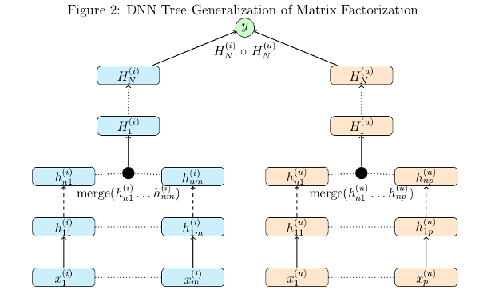

Tutorial¶
Welcome to the introduction/bleeding-edge testing of the Automated Neural-graph Toolkit! Parts 1 and 2 are meant to be a gentle introduction to the toolkit. Read the directions carefully and be prepared use your copy and pasting skills. In Part 3 you will be introduced to features of the toolkit for developing new models. Carefully reading parts 1 and 2 will pay off when you engage in the task of building a new model.
Todo
Make a folder called antlab_tutorial wherever you feel like working. Copy the tar file from /home/hutch_research/bin/ant_tutorial.tar.gz into the folder you have created. Uncompress the file: I use tar -zxvf ant_tutorial.tar.gz. Do all your work out of the folder you have extracted the files to.
Note
For this lab you will have to ssh into a linux machine with -Y forwarding for pictures since we don’t have graphviz on any other machines as far as I know.
Part 1: Matrix Factorization Model¶
Low Rank Matrix Factorization is a popular machine learning technique used to produce recommendations given a set of ratings a user has given an item. The known ratings are collected in a user-item utility matrix and the missing entries are predicted by optimizing a low rank factorization of the utility matrix given the known entries. The basic idea behind matrix factorization models is that the information encoded for items in the columns of the utility matrix, and for users in the rows of the utility matrix is not exactly independent. We optimize the objective function \(\sum_{(u,i)} (R_{ui} - P_i^T U_u)^2\) over the observed ratings for user u and item i using gradient descent.
We can express the same optimization in the form of a computational graph that will play nicely with tensorflow:

Here \(xitem_i\), and \(xuser_j\) are some representation of the indices for the user and item vectors in the utility matrix. These could be one hot vectors, which can then be matrix multiplied by the P and U matrices to select the corresponding user and item vectors. In practice it is much faster to let \(xitem_i\), and \(xuser_j\) be vectors of indices which can be used by tensorflow’s gather or embedding_lookup functions to select the corresponding vector from the P and U matrices.
This simple model isn’t difficult to code directly in tensorflow, but it’s simplicity allows a demonstration of the functionality of the toolkit without having to tackle a more complex model.
To start let’s import the modules we need and use the read_data_sets function to load our data:
import tensorflow as tf
import config
import generic_model
import loader
data = loader.read_data_sets('/home/hutch_research/data/deep_learning_lab/ml100k',
hashlist=['item', 'user', 'ratings'])
We can view the dimensions types, and dictionary keys of the data we’ve loaded using the DataSets.show method,
which is a useful feature for debugging.
data.show()
The previous command will display this to the terminal:

For this data there are 5000 ratings in dev and test, and 70745 ratings in train.
Notice that the data type of item and user above is HotIndex. This is a data structure for storing
one hot vectors, with a field for a vector of indices into a one hot matrix and the column size of the one hot matrix.
This will be important as we intend to use the lookup function, which takes HotIndex
objects for its data argument, makes a placeholder associated with this data and uses the dim attribute of the HotIndex
data to create a tf.Variable tensor with the correct dimension. The output is an embedding_lookup using the placeholder
and variable tensors created.
This model does better with the target ratings centered about the mean so let’s center the ratings.
data.train.labels['ratings'] = loader.center(data.train.labels['ratings'])
data.dev.labels['ratings'] = loader.center(data.dev.labels['ratings'])
Todo
Make a plain text file named mf.config using the text below. We will use this to make the tensorflow computational graph:
dotproduct x_dot_y()
-huser lookup(dataname='user', initrange=0.001, shape=[None, 20])
-hitem lookup(dataname='item', initrange=0.001, shape=[None, 20])
-ibias lookup(dataname='item', initrange=0.001, shape=[None, 1])
-ubias lookup(dataname='user', initrange=0.001, shape=[None, 1])
The python syntax highlighting illustrates the fact that the node specifications in a .config file are just python function calls with two things omitted, the first argument which is a tensor or list of tensors, and the last argument which is the name of the tensor output which defines it’s unique variable scope. The first argument is derived from the structure of the config spec, inferred by a marker symbol which we have chosen as ‘-‘. The input is the list of tensors or the single tensor in the spec at the next level below a node call. Tabbing is optional. It may be easier to read a config file with tabbing if you are using node functions without a long sequence of arguments. The second omitted argument, the name, is whatever directly follows the graph markers.
Now we make an AntGraph object.
with tf.variable_scope('mfgraph'):
ant = config.AntGraph('mf.config',
data=data.dev,
marker='-',
display_graph=True)
When you run this code a graphviz dot pdf image of the graph you have composed should pop up on the screen because we set display_graph =True. This pdf file will show up in the pics folder with the name no_name.pdf. There are of course parameters for specifying the name and location where you want the picture to go. The dot specification will be located in the same place as the picture and be named no_name.dot unless you have specified a name for the file.

Shown in the graph picture above the x_dot_y function takes a list of tensors as its first argument.
The first two tensors are matrices whose rows are dot producted resulting in a vector containing a scalar for each row.
The second two tensors are optional biases. For this model, giving a user and item bias helps a great deal. When lookup
is called more than once in a config file using the same data argument the previously made placeholder tensor is used,
so here ibias depends on the same placeholder as hbias and ubias depends on the same placeholder as huser, which
is what we want.
The AntGraph object, ant is a complete record of the tensors created in graph building.
There are three accessible fields, tensordict, placeholderdict, and tensor_out,
which are a dictionary of non-placeholder tensors made during graph creation, a dictionary of placeholder tensors made during
graph creation and the tensor or list of tensors which is the output of the top level node function.
These should be useful if we want to access tensors post graph creation.
Okay let’s finish making this model:
y = ant.tensor_out
y_ = tf.placeholder("float", [None, None], name='Target')
ant.placeholderdict['ratings'] = y_ # put the new placeholder in the graph for training
objective = (tf.reduce_sum(tf.square(y_ - y)) +
0.01*tf.reduce_sum(tf.square(ant.tensordict['huser'])) +
0.01*tf.reduce_sum(tf.square(ant.tensordict['hitem'])) +
0.01*tf.reduce_sum(tf.square(ant.tensordict['ubias'])) +
0.01*tf.reduce_sum(tf.square(ant.tensordict['ibias'])))
dev_rmse = tf.sqrt(tf.div(tf.reduce_sum(tf.square(y - y_)), data.dev.num_examples))
model = generic_model.Model(objective, ant.placeholderdict,
mb=500,
learnrate=0.01,
verbose=True,
maxbadcount=20,
epochs=100,
evaluate=dev_rmse,
predictions=y,
targets=y_)
Notice that the tensordict enables easy access to huser, hitem, ubias, ibias, which we want to regularize to
prevent overfitting. The Model object we are creating model needs the fields objective, placeholderdict, predictions, and targets.
If you don’t specify the other parameters default values are set. objective is used as the loss function for gradient
descent. placeholderdict is used to pair placeholder tensors with matrices from a dataset dictionary with the same
keys. targets, and predictions are employed by the loss function during evaluation, and by the prediction function
to give outputs from a trained model.
Training is now as easy as:
model.train([data.train, data.dev])
If you don’t wan’t to evaluate a model during training, for instance if you are doing cross-validation, you can just hand
in a training set, instead of an ordered pair of train and dev sets. Note that here there must be keys in either the DataSet
features, or labels dictionaries, that match with the keys from the placeholderdict which is handed
to the Model constructor. In our case we have placed a placeholder with the key ratings in the
placeholdedict corresponding to
the ratings key in our data DataSet. So our placeholderdict is:
{'item': <tensorflow.python.framework.ops.Tensor object at 0x7f0bea7b43d0>,
'user': <tensorflow.python.framework.ops.Tensor object at 0x7f0bea846e90>,
'ratings': <tensorflow.python.framework.ops.Tensor object at 0x7f0bea77fc90>}
Now we have a trained model that does pretty well but it would be nice to automate a hyper-parameter search to find the best we can do (should be around .91).
We can change our mf.config file to accept variables for hyperparameters by substituting hard values with variable names prefixed with a ‘$’:
dotproduct x_dot_y()
-huser lookup(dataname='user', initrange=$initrange, shape=[None, $kfactors])
-hitem lookup(dataname='item', initrange=$initrange, shape=[None, $kfactors])
-ibias lookup(dataname='item', initrange=$initrange, shape=[None, 1])
-ubias lookup(dataname='user', initrange=$initrange, shape=[None, 1])
Now we have to let the AntGraph constructor know what to bind these variables to with a variable_bindings
argument. So change the constructor call like so.
with tf.variable_scope('mfgraph'):
ant = config.AntGraph('mf.config',
data=data.dev,
marker='-',
variable_bindings = {'kfactors': 20, 'initrange':0.001})
Todo
Modify the code you’ve written to take arguments for the hyperparameters: kfactors, initrange, mb, learnrate, maxbadcount, lambda (a regularization coefficient), and epochs, and conduct a parameter search for the best model. Limit your search to under 1000 combinations of hyperparameters.
Part 2: Tree Model¶
To demonstrate the power and flexibility of using a config file we can make this more complex model below by changing a few lines of code and using a different config file:
We need to change the read_data_sets call to omit the optional hashlist parameter so we get more features from
the data folder (if a hashlist parameter is not supplied, read_data_sets reads all files with name prefixes
features_ and labels_ ).
data = loader.read_data_sets('/home/hutch_research/data/deep_learning_lab/ml100k')
Todo
Make a plain text file called tree.config with the specs for our tree model.
dotproduct x_dot_y()
..all_user dnn([10,10,10],'tanh',keep_prob=None)
....merge_user concat(10)
......huser lookup(dataname='user', initrange=$initrange, shape=[None, $kfactors])
......huser_meta dnn([10,10,10],'tanh',keep_prob=None)
........user_meta placeholder(tf.float32)
..all_item dnn([10,10,10],'tanh',keep_prob=None)
....merge_item concat(10)
......hitem lookup(dataname='item', initrange=$initrange, shape=[None, $kfactors])
......hitem_meta dnn([15,15,10],'tanh',keep_prob=None)
........item_meta placeholder(tf.float32)
......hitem_term dnn([10,10,10],'tanh',keep_prob=None)
........item_term placeholder(tf.float32)
..ibias lookup(dataname='item', initrange=$initrange, shape=[None, 1])
..ubias lookup(dataname='user', initrange=$initrange, shape=[None, 1])
I used a different delimiter so we have to change the marker value in the AntGraph constructor call.
ant = config.AntGraph('tree.config',
data=data.dev,
marker='.',
variable_bindings = {'kfactors': 20, 'initrange':0.001}))
Note
I have used two ‘.’s instead of one in the config file to mark levels of the graph for more readable indentation. When you specify a marker you are free to use a string of these markers of arbitrary length as long as you are consistent.
We get the following graphviz dot picture:
Todo
Modify the code you’ve written to take arguments for the set of new hyperparameters, and optional optimization parameters
from the Model API. Perform a parameter search to see if you can do better than basic MF. Limit your search to under
1000 combinations of hyperparameters.
Part 3: Crafting a new model¶
So far we have been using functions in our config files that are defined in the node_ops module. In the model we have defined, the concat nodes are passed directly to dnn nodes with no intervening non-linearity. We can introduce non-linear transformations at these points by directly calling tensorflow non-linear transforms in the config file.
Todo
Introduce tensorflow non-linear transforms in tree.config
We also have the ablility to introduce new node functions which are not defined by tensorflow or node_ops. One thing we might try is to replace our dnn nodes with highway_dnn nodes that we need to define. Here is a first approximation of defining a new highway_dnn node:
import node_ops
def highway_dnn(tensor_in, hidden_units, activation='tanh', keep_prob=None, name='highway_dnn'):
activation = node_ops.ACTIVATION[activation]
with tf.variable_scope(name):
for i, n_units in enumerate(hidden_units):
with tf.variable_scope('layer%d' % i):
with tf.variable_scope('hidden'):
hidden = activation(node_ops.linear(tensor_in, n_units, True))
with tf.variable_scope('transform'):
transform = tf.sigmoid(node_ops.linear(tensor_in, n_units, True))
tensor_in = tf.mul(hidden, transform) + tf.mul(tensor_in, 1 - transform)
if keep_prob:
tensor_in = node_ops.dropout(tensor_in, keep_prob)
return tensor_in
This looks okay for a first approximation. However we would like to initialize the bias for the transform gate to some
negative value, so we have to set the optional bias_start=0 parameter in the call to linear for the transform gate to
a value we would like.
Todo
Alter the highway_dnn code to take an optional parameter for transform bias initialization. Replace dnn nodes in tree.config with highway_dnn nodes.
Now we need to let the AntGraph constructor know about our new node by using the factory constructor graph_setup with
one of the two optional arguments introducing new node functions. If
your new node definition is in it’s own module possibly full of other node definitions you have created you can use the
imports argument which is a dictionary with module names as keys and the paths to modules as values. In our case since we
have only made one new node function we will use the function_map parameter which takes a dictionary of function_name keys
and function values. So we replace our AntGraph constructor call as follows:
with tf.variable_scope('mfgraph'):
ant = config.graph_setup('tree2.config',
data=data.dev,
marker='.',
function_map = {'highway_dnn': highway_dnn},
variable_bindings = {'kfactors': 20, 'initrange':0.001})
Here is an example config file and corresponding graphviz dot image adding non-linearity and a highway_dnn node. Notice that since highway networks have a fixed dimension size for hidden layers we have used an intermediate dnn node to map the input to a dimension we want.
dotproduct x_dot_y()
..all_user dnn([10,10,10],'tanh',keep_prob=None)
....tanh_user tf.nn.tanh()
......merge_user concat(10)
........huser lookup(dataname='user', initrange=$initrange, shape=[None, $kfactors])
........huser_meta dnn([10,10,10],'tanh',keep_prob=None)
..........user_meta placeholder(tf.float32)
..all_item dnn([10,10,10],'tanh', keep_prob=None)
....tanh_item tf.nn.tanh()
......merge_item concat(10)
........hitem lookup(dataname='item', initrange=$initrange, shape=[None, $kfactors])
........highway_item_meta highway_dnn([15,15],'tanh', keep_prob=None)
..........dnn_item_meta dnn([15],'tanh', keep_prob=None)
............item_meta placeholder(tf.float32)
........hitem_term dnn([10,10,10],'tanh',keep_prob=None)
..........item_term placeholder(tf.float32)
..ibias lookup(dataname='item', shape=[None, 1], initrange=$initrange)
..ubias lookup(dataname='user', shape=[None, 1], initrange=$initrange)

Now that we are familiar with the tricks for crafting new models we can engage in creative enterprise. We have been using the scalar ratings targets for objectives, but there are also one hot targets for classification included in the dataset.
Todo
Using the data provided, craft your own model, and do some preliminary testing to see how it performs against the other models you have explored. If you run into a bug, contact me and I will try to address it but feel free to just take note of the bug, abandon the effort, and try something else. Some ideas:
Classification
Multiple targets of regression and classification
A different combine function which has a multiplicative interaction between data streams
Combining data streams in a binary fashion (for item streams don’t combine all three at once)
Scale the regression targets and use the built in
cosinenode function instead ofx_dot_yMake the branches dealing with indices linear, as they are in basic MF, and combine them later in the tree
Create an LSTM node that takes a sequence as input and outputs the last hidden state vector.
For this task results are not paramount. Think of a way to address the data that makes sense and explores the kind of functionality you may want to employ the toolkit for.
Todo
Submit the code you have written along with a one to two page writeup detailing your experience with the ANT toolkit addressing the following.
- Analysis of model performances
- Bug reports
- Automated Neural-graph Toolkit pros and cons
- Wish list for toolkit functionality